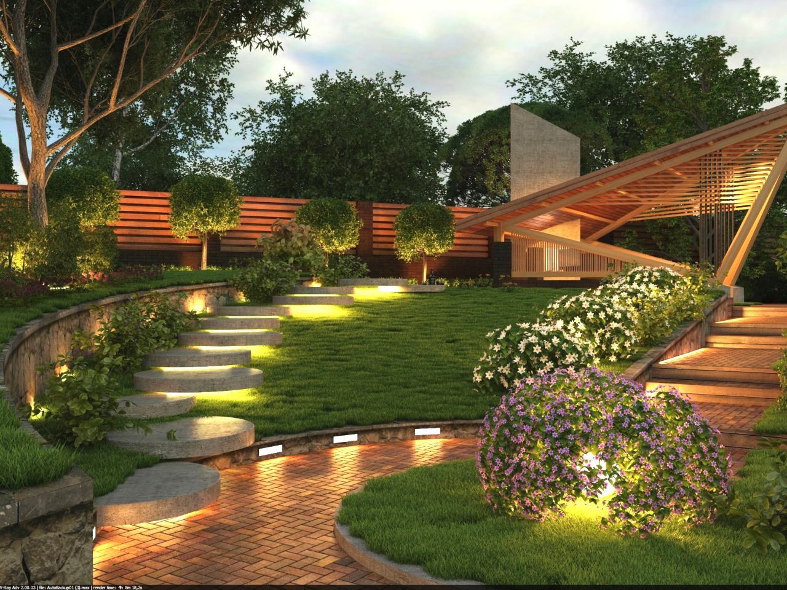

Ландша́фтный диза́йн — искусство, находящееся на стыке трёх направлений: с одной стороны, архитектуры, строительства и проектирования
(инженерный аспект), с другой стороны, ботаники и растениеводства (биологический аспект) и, с третьей стороны, в ландшафтном дизайне используются сведения из
истории (особенно из истории культуры) и философии. Кроме того, ландшафтным дизайном называют практические действия по озеленению и благоустройству территорий.
В отличие от садоводства и огородничества, основная задача которых имеет сельскохозяйственную направленность (повышение урожайности садово-огородных культур),
ландшафтный дизайн — более общая и универсальная дисциплина. Главная задача ландшафтного дизайна — создание гармонии, красоты в сочетании с удобствами использования инфраструктуры зданий, сглаживание конфликтности между урбанизационными формами и природой, зачастую от них страдающей.
Ландшафтный дизайн может быть частным случаем более общего понятия — ландшафтного проектирования.
С древних времён сады являлись традиционной формой организации окружающего пространства с помощью зелёных насаждений. Особую популярность они получили при
дворах правителей и вельмож стран Востока. Далее садоводство как искусство распространилось практически повсеместно. При этом долгое время важную роль играла утилитарность садоводства , позднее большее внимание получила декоративность цветов. Но ни фруктовые
деревья, ни цветы не имеют столь широкого распространения в современном ландшафтном дизайне, особенно в его современной урбанистической форме. Ландшафтный
дизайн — понятие собственно XX века. Термин возник в Западной Европе, в первую очередь в густонаселённых и индустриально развитых странах: Великобритания, Германия, где массовая индустриализация и рост пригородов быстро привели к давлению на окружающую среду.
Первый этап по подготовке местности к проведению ландшафтных работ начинается с художественного проектирования, то есть создания набросочного плана, основные правила которого:
- Посадка и размещение растений должна иметь групповой характер, то есть растения одного вида или близкородственных видов должны быть посажены в непосредственной близости друг от друга, в противном случае местность приобретает куцый, пустынный вид.
- При посадке растений и проведении других художественно-оформительских мероприятий следует избегать прямых линий. Растения в особенности не
рекомендуется сажать по прямой линии, так как это не способствует развитию у них кустистости. Крайне строгая симметрия также нежелательна из-за
своего неестественного вида, хотя определённая уравновешенность и сбалансированная композиция элементов дизайна должна непременно присутствовать.
Текст бывает разным
- Зеленым
- Желтым
- Красным